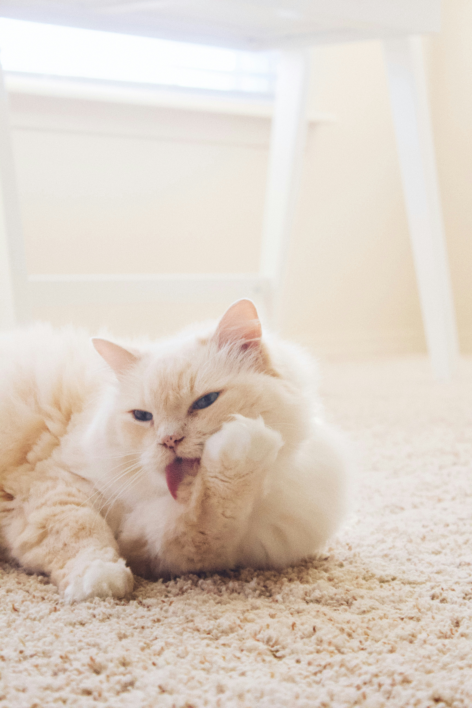
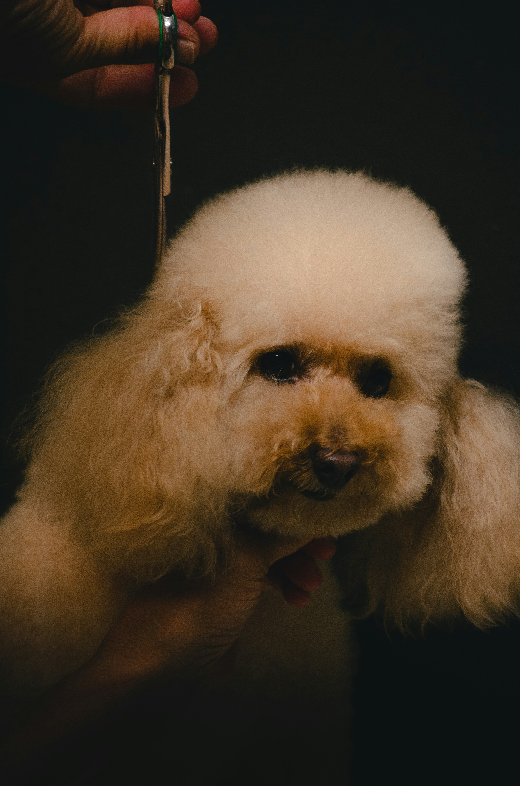

Questions About Grooming

- How often should different breeds of dogs be groomed, and what factors influence this frequency?
- What are some common grooming mistakes that owners should avoid?
- How can owners effectively manage shedding in their dogs, especially during seasonal changes?
- Are there specific grooming practices that can help prevent common skin conditions in dogs, such as hot spots or dermatitis?
- How can owners safely clean their dog's ears and teeth to maintain optimal hygiene?
Questions About Pet's Health

- What signs should I look out for that might indicate my pet has skin issues or allergies?
- Can you recommend a specific shampoo or grooming product that can help with my pet's specific skin or coat condition?
- Are there any specific grooming techniques or products that can help prevent parasites such as fleas and ticks?
- Can you provide tips on maintaining my pet's dental health at home between professional cleanings?
- Are there any dietary or nutritional recommendations you have that can promote overall skin and coat health in my pet?
Questions About Our Groomers

- What kind of training or certifications do the groomers have?
- Are there any precautions taken for pets with specific health conditions or behavioral issues?
- How long have the groomers been working as pet groomers?
- Will I receive updates or notifications about my pet's grooming session by the groomer?
- How far in advance do I need to schedule an appointment?
If you wish to see the Questions frequently asked and the answers to those questions, please find our website on a desktop or tablet.
To view answers, visit site on desktop or tablet.